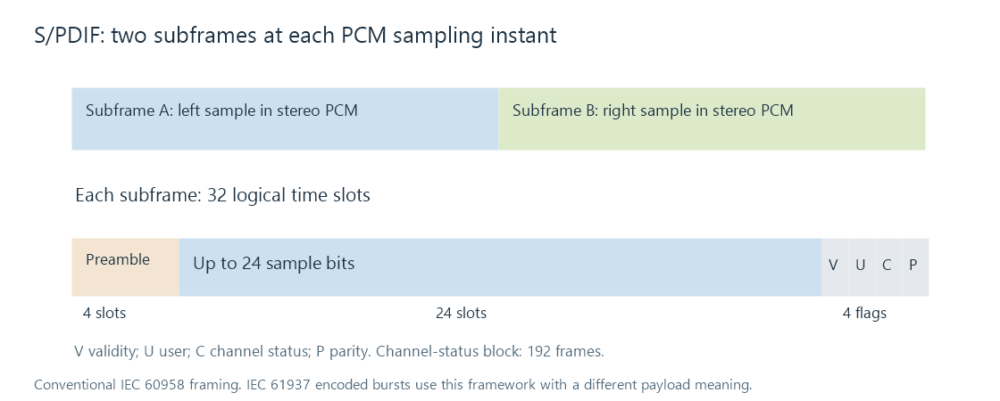

S/PDIF digital audio
S/PDIF is a consumer digital audio interface commonly encountered as a coaxial connection or an optical TOSLINK connection. It carries a timed digital stream to another device; the receiver can then convert PCM to analog or decode a supported compressed presentation.
The crucial question is what that stream contains. Two-channel PCM and a Dolby Digital surround bitstream can use the same general link framing while requiring different treatment at the receiver.
Two subframes make an audio frame
In the conventional IEC 60958 structure, each audio frame has two subframes, A and B. For stereo PCM, those carry the left and right samples at one instant.

A subframe spans 32 time slots: four for its preamble, up to 24 for the sample field, and four for validity, user, channel-status and parity information. At shorter word lengths, not every position in the sample area holds a valid audio bit.
One channel-status bit per subframe accumulates into a 192-frame status block for each channel. This communicates information about the stream, including its consumer-mode interpretation. It is different from compressed-codec metadata inside an encoded payload.
At a 48 kHz frame rate, the two 32-slot subframes give:
48,000 frames/s × 2 subframes/frame × 32 slots/subframe
= 3,072,000 logical time slots/s
This is framing arithmetic, not a claim that the physical biphase-mark waveform has a 3.072 MHz analog bandwidth. Its transitions encode both information and timing.
PCM channels and coded surround are different
For ordinary stereo PCM, the receiver interprets the sample fields as amplitudes. A PCM volume adjustment can be performed before transmission by scaling those values.
IEC 61937 uses the digital audio framework to transport encoded audio bursts. In that case the receiving device recognizes the payload type and decodes it. A supported AC-3 stream can produce 5.1 channels even though the carrier uses the two-subframe framework.
That does not mean the same conventional connection carries six independent channels of ordinary LPCM. Nor does it imply support for every newer lossless or immersive codec. The output device, driver, transport convention and receiver must all support the chosen encoded presentation.
An Emby player can therefore deliver stereo PCM after a downmix or send a supported encoded track for downstream decoding, depending on its chosen route. The original movie's channel count and the transmitted representation answer different questions.
An ordinary sample multiplier cannot change the volume of those encoded bytes as if they were PCM. Volume must be handled through a suitable decoded route or downstream control. Bitstream passthrough develops that distinction.
Optical and coaxial carriage
The physical implementations differ: one uses light and the other an electrical signal with the appropriate interface and cable. They carry the same kind of logical consumer audio stream; changing between them does not convert a soundtrack codec into another format.
The receiver recovers timing from the incoming signal. “Locked” establishes that it has acquired the stream, while a detected codec or PCM indication describes its interpretation. A surround listening mode applied afterward describes additional receiver processing.